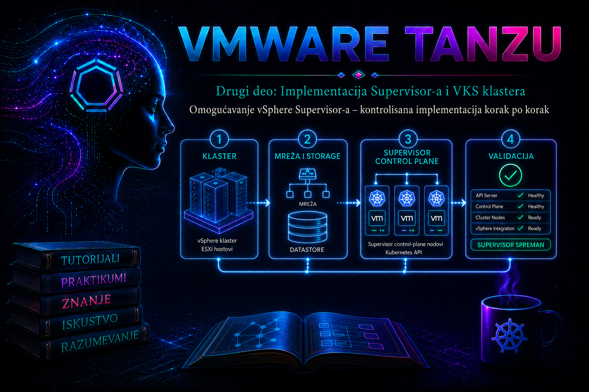

VMware & Tanzu

Prethodna lekcija završila je plan implementacije: izabrani su klaster ili zone, mrežni model, storage politike, upravljačke adrese i rasponi koji ne smeju da se preklapaju. U ovoj lekciji taj odobreni dizajn prevodimo u stvarnu Supervisor implementaciju. Cilj nije samo da čarobnjak u vSphere Client-u završi bez crvene poruke, već da se promena izvede kontrolisano, sa poznatim početnim stanjem, dokazima za svaku kontrolnu tačku i unapred definisanim kriterijumom za zaustavljanje.
Omogućavanje Supervisor-a je infrastrukturna promena širokog dometa. vCenter Workload Control Plane servis orkestrira pripremu ESXi hostova, postavljanje Supervisor control plane virtuelnih mašina, povezivanje mreža, primenu storage politika, uspostavljanje Kubernetes API endpoint-a i konfiguraciju zavisnih servisa. U image-managed klasteru u proces je uključen i vSphere Lifecycle Manager, koji održava željeno stanje hostova. Zato neuspeh u jednoj zavisnosti — DNS-u, NTP-u, rutiranju, MTU-u, sertifikatu load balancer-a, storage kompatibilnosti ili vLCM depot-u — može da se pojavi kao zastoj u sasvim drugoj fazi.
Terminologija zavisi od generacije proizvoda. U vSphere 8.x interfejs i dokumentacija često koriste nazive Workload Management, vSphere Supervisor, vSphere IaaS control plane i TKG Service; aktuelni naziv Kubernetes servisa je vSphere Kubernetes Service (VKS). U VCF/vSphere 9.x Supervisor je deo šireg VCF modela i licenciranje komponenti se vezuje za licencirani vCenter/solution subscription. Naziv polja, redosled stranica čarobnjaka i ponuđene mrežne integracije mogu se razlikovati između build-ova. Zbog toga se ova lekcija oslanja na logičke faze implementacije, dok se tačan prikaz mora proveriti u dokumentaciji za instalirani build.
1. Šta enablement menja i zašto se tretira kao kontrolisana promena
Administrator u čarobnjaku unosi željenu konfiguraciju, ali promenu ne izvršava jedna komponenta. vCenter proverava podobnost klastera, orkestrira host konfiguraciju, raspoređuje control plane VM instance i prati njihovo stanje. ESXi hostovi dobijaju komponente potrebne za učešće u Supervisor-u, mrežna platforma obezbeđuje L2/L3 povezivost i virtualne adrese, storage politike određuju gde se čuvaju control plane objekti, a DNS, NTP i PKI omogućavaju identitet i vremenski doslednu komunikaciju.
| Faza | Promena | Glavni dokaz | Tipična posledica greške |
|---|---|---|---|
| Pre-check | Provera klastera, hostova, licenci, mreže i storage-a | Bez blokirajućih compatibility grešaka; odobren change zapis | Čarobnjak ne dopušta nastavak ili prijavljuje nepodržanu konfiguraciju |
| Host preparation | vLCM/EAM/WCP pripremaju ESXi hostove i Spherelet zavisnosti | Host Config status napreduje; nema vLCM drift-a ni EAM alarma | Status ostaje Configuring; host nije Ready |
| Control plane deployment | Kreiraju se Supervisor control plane VM instance | VM instance su raspoređene, uključene i imaju očekivane mrežne adaptere | Provisioning timeout, placement ili storage greška |
| Network bootstrap | Konfigurišu se management/workload veze, API VIP i load balancing | vCenter doseže floating/API adresu; gateway, DNS i NTP su dostupni | VM radi, ali Supervisor ostaje u Configuring stanju |
| Kubernetes bootstrap | Formira se etcd/control plane i pokreću sistemski podovi | Supervisor prelazi u Running/Healthy prema verziji | Nespremni sistemski podovi i zavisni operatori |
Promena je uspešna tek kada su ostvarena tri nivoa dokaza: vSphere nivo prikazuje zdrav Supervisor i hostove; mrežni nivo potvrđuje dosegljivost i pravilno rutiranje; Kubernetes nivo potvrđuje spremnost čvorova i sistemskih komponenti. Zelen status samo u jednom interfejsu nije dovoljan dokaz.
2. Verzijska, licencna i topološka odluka pre prvog klika
Pre početka zabeležite tačne build brojeve vCenter Server-a, ESXi hostova, NSX-a i NSX Advanced Load Balancer-a ako se koriste. Kompatibilnost se proverava prema Broadcom interoperability i product documentation matricama za konkretan build, a ne prema opštem nazivu „vSphere 8”. Patch nivo može promeniti dostupne mogućnosti, poznate probleme i način remediacije.
- Licenca: u vSphere 8.x proverite model koji važi za kupljeni VVF/VCF paket, evaluation period i način dodele Supervisor licence. Od vSphere 8.0 Update 2b postoji solution-license model za odgovarajuće pakete. U vSphere/VCF 9.x komponente se licenciraju u okviru aktuelnog subscription modela nakon licenciranja povezanog vCenter-a. Ne oslanjajte se na stari Tanzu edition postupak bez provere build-a i ugovora.
- Jedan klaster ili tri zone: single-cluster Supervisor i three-zone Supervisor nisu isti placement model. U zonalnom modelu svaka vSphere zona mapira odgovarajući klaster i kvar domene mora biti stvaran, ne samo imenovan.
- Mrežni stack: NSX i vSphere Distributed Switch (VDS) modeli imaju različite preduslove i mogućnosti. Izbor se ne menja usput da bi se „prošlo” kroz čarobnjak.
- Load balancer: tačan podržani provider i integracija zavise od verzije. Za VDS model potreban je podržani load-balancing mehanizam; za NSX model proveravaju se NSX objekti, transport zone, edge kapacitet i, kada je deo dizajna, integracija sa NSX Advanced Load Balancer-om.
- Workload tipovi: podrška za vSphere Pods, Supervisor Services i određene platformske funkcije nije identična u svim mrežnim modelima i verzijama. Ne projektujte budući servis na osnovu same činjenice da se Supervisor može omogućiti.
Produkcioni go/no-go dokument mora sadržati odobren mrežni dijagram, IPAM rezervacije, DNS zapise, storage policy rezultate, firewall matricu, rollback odluku, odgovorne osobe i period promene. Laboratorija može koristiti manji control plane size i pojednostavljene mrežne servise, ali ne sme prikrivati preklapanje CIDR opsega, nepouzdan DNS ili nepodržanu verziju.
3. Predimplementaciona kontrolna kapija
Kontrolna kapija se izvršava neposredno pre promene, čak i kada je readiness assessment završen prethodnog dana. Njena svrha je da otkrije drift: host koji je ušao u maintenance mode, novu vLCM grešku, istekli sertifikat, zauzetu IP adresu ili promenu firewall pravila. Svaka provera ima vlasnika i dokaz sa vremenskom oznakom.
| Oblast | Go uslov | Dokaz | No-go primer |
|---|---|---|---|
| vCenter i hostovi | Podržani i međusobno kompatibilni build-ovi; svi ciljni hostovi povezani | Inventory izvoz, health i compatibility rezultat | Disconnected host, nerešena vLCM compliance greška |
| Cluster services | HA i DRS konfigurisani prema podržanoj topologiji; kapacitet za control plane rezervacije | Cluster configuration i capacity zapis | Nema placement kapaciteta posle jednog kvara hosta |
| VDS/NSX | Svi hostovi imaju potrebne uplink/port group/transport veze; MTU je end-to-end usklađen | VDS health, NSX transport node i testovi putanje | Jedan host nema workload port group ili overlay MTU |
| IPAM | Sve statičke adrese i rasponi rezervisani i bez preklapanja | IPAM change zapis i ARP/ping provera iz odgovarajućeg segmenta | API VIP već odgovara na ARP ili CIDR se preklapa sa Service CIDR-om |
| DNS/NTP | Forward i, gde je zahtevano, reverse rezolucija; isti pouzdan vremenski izvor | nslookup/dig, NTP health | vCenter FQDN nije razrešiv sa workload mreže |
| Storage | Politike su compatible na svim predviđenim datastore-ovima; dovoljno prostora | SPBM compatibility i datastore capacity | Politika je compatible samo na datastore-u nedostupnom jednom hostu |
| Load balancer | Provider zdrav, sertifikat i kredencijali važeći, address pool slobodan | Provider health, certificate chain i pool evidencija | Pogrešan data-plane endpoint ili nepoverljiv sertifikat |
| Operativa | Backup vCenter-a i podržanih konfiguracija svež i proverljiv; monitoring i change owner dostupni | Backup job i restore-readiness zapis | Ne postoji poznata tačka oporavka vCenter-a |
Važno: običan ICMP test ne dokazuje da je mreža spremna. Potrebno je proveriti konkretan smer, izvorni segment, TCP/UDP port, DNS ime i MTU koji će koristiti komponenta. Firewall „allow” pravilo bez potvrđenog toka paketa nije dokaz.
4. Read-only PowerCLI snimak početnog stanja
Sledeće komande izvršavaju se sa administratorske radne stanice na kojoj je instaliran aktuelni VCF/VMware PowerCLI. One samo čitaju stanje. Koristite namenski nalog sa najmanjim potrebnim privilegijama i čuvajte izlaz u change evidenciji; lozinku ne upisujte u skriptu.
$vcenter = "vcsa01.example.com"
$clusterName = "Compute-01"
Connect-VIServer -Server $vcenter
$cluster = Get-Cluster -Name $clusterName
$cluster | Select-Object Name, HAEnabled, DrsEnabled, DrsAutomationLevel
$cluster | Get-VMHost |
Select-Object Name, ConnectionState, PowerState, Version, Build
Get-WMCluster -Cluster $cluster |
Format-List *
$cluster | Get-Datastore |
Select-Object Name, Type, CapacityGB, FreeSpaceGB
Get-SpbmStoragePolicy |
Select-Object Name, DescriptionOčekivani rezultat je jedan nedvosmislen ciljni klaster, svi hostovi u očekivanom stanju i odsustvo već aktivnog Workload Management-a. Get-WMCluster može vratiti prazan rezultat ili stanje koje zavisi od PowerCLI/build kombinacije; ako pokaže postojeću ili delimičnu konfiguraciju, ne pokrećite novi enablement pre nego što utvrdite poreklo stanja. Izvoz liste storage politika ne dokazuje kompatibilnost — compatibility se potvrđuje u SPBM/vSphere prikazu za konkretan datastore.
5. Promenljivi podaci i implementacioni radni list
Vrednosti se ne improvizuju u čarobnjaku. Pre otvaranja stranice Workload Management popunite i odobrite radni list. Taj dokument postaje osnova za peer review, implementaciju i kasniji audit.
| Parametar | Primer laboratorijske vrednosti | Produkcioni kriterijum |
|---|---|---|
| vCenter / klaster ili zone | vcsa01 / Compute-01 | Tačan inventory MoRef i potvrđena failure-domain topologija |
| Management port group | DVPG-SUP-MGMT | Dostupna na svakom ciljnom hostu; VLAN i MTU potvrđeni |
| Control plane IP adrese | 10.20.14.21-23 | Rezervisane, slobodne, rutabilne prema zahtevanoj matrici |
| Floating/Kubernetes API IP | 10.20.14.20 | Rezervisana; DNS ime i sertifikacioni plan poznati |
| DNS / NTP / search domain | 10.20.1.10 / 10.20.1.20 / example.com | Dostupni sa relevantnih interfejsa; bez split-DNS iznenađenja |
| Service CIDR | 10.96.0.0/24 | Ne preklapa se ni sa jednom fizičkom, VPN, pod ili povezanom mrežom |
| Workload/namespace mreža | DVPG-WORKLOAD-01 | Adresni kapacitet uključuje rast i operativnu rezervu |
| Ingress/egress rasponi | Prema odobrenom dizajnu | Međusobno odvojeni kada model to zahteva; rutiranje/NAT dokumentovani |
| Storage politike | SUP-CP-GOLD, SUP-EPHEMERAL, SUP-IMAGE | Kompatibilne, dostupne i kapacitivno dovoljne |
| Control plane size | Tiny samo u laboratoriji | Dimenzionisan prema podržanoj skali i budućim servisima |
| Load balancer | Laboratorijski podržan provider | HA, sertifikati, address pool, health monitori i operativno vlasništvo |
Service CIDR je interna Kubernetes servisna mreža i ne mora biti rutirana iz enterprise mreže, ali mora biti jedinstvena u celom relevantnom okruženju. Management, workload, ingress, egress i namespace rasponi imaju različite uloge; spajanje tih pojmova u jednu kolonu „Kubernetes IP” vodi pogrešnim firewall pravilima i otežava incident response.
6. Kontrolisana GUI implementacija
Tačan naziv koraka u vSphere Client-u zavisi od build-a. Tipičan tok počinje preko Menu → Workload Management, zatim Get Started ili dodavanjem Supervisor-a. Pre svakog potvrđivanja snimite stranicu ili izvezite vrednosti u change zapis. Ne koristite browser refresh kao način „ubrzavanja” operacije; status pratite iz task/event pogleda i relevantnih logova.
Korak 1 — izbor sistema, topologije i mrežnog stack-a
- Izaberite tačan vCenter i ciljni klaster, odnosno unapred konfigurisane vSphere zone.
- Izaberite NSX ili VDS mrežni model prema odobrenom dizajnu.
- Pročitajte pre-check rezultat do kraja. Warning nije automatski bezopasan: vlasnik promene mora da objasni njegovu posledicu.
- Ako se ponuđena topologija razlikuje od planirane, zaustavite promenu. Ne birajte dostupnu opciju samo zato što je čarobnjak prihvata.
Kontrolna tačka: inventory objekat, mrežni stack i broj zona tačno odgovaraju odobrenom radnom listu. Screenshot i task ID unose se u evidenciju.
Korak 2 — control plane size i storage politike
- Izaberite control plane size prema sizing vodiču za verziju.
Tinyje prihvatljiv za ograničenu laboratoriju, ali nije podrazumevana produkciona odluka. - Dodelite storage politike za control plane/master, ephemeral i image sadržaj kada ih interfejs traži odvojeno.
- Potvrdite da politika nije samo sintaktički dostupna već kompatibilna sa datastore-ovima vidljivim svim odgovarajućim hostovima.
- Proverite slobodan prostor i failure tolerance politike. Prestroga politika bez dovoljnog broja fault domena može blokirati provisioning; preslaba politika smanjuje otpornost.
Posledica odluke: control plane size utiče na rezervacije CPU/RAM-a, maksimalnu podržanu skalu i stabilnost sistemskih servisa. Storage politika utiče na dostupnost, performanse i ponašanje pri kvaru; kasnija promena nije zamena za početno pravilno projektovanje.
Korak 3 — management mreža i upravljačke adrese
- Izaberite management distributed port group dostupan svakom ciljnom hostu.
- Izaberite DHCP samo ako verzija i dizajn to podržavaju i ako DHCP obezbeđuje stabilne, rezervisane lease-ove, ispravan gateway, DNS i NTP. Za produkciju se često biraju unapred rezervisane statičke adrese zbog predvidljivosti.
- Unesite control plane management adrese, subnet mask/prefix, gateway, DNS servere, NTP servere i search domain tačno iz IPAM-a.
- Unesite floating/API adresu ako je zasebno polje u izabranom modelu.
Kontrolna tačka: svaka adresa je slobodna iz perspektive pravog VLAN-a, gateway je dosegljiv, vCenter FQDN se razrešava preko navedenog DNS-a, a vremenski izvori su usklađeni. Ne testirajte samo sa administratorskog laptopa koji može koristiti drugu DNS zonu i drugu rutu.
Korak 4 — workload mreža i load balancer integracija
U VDS modelu izaberite primary workload network i podržani load balancer, zatim unesite address range, gateway, masku, DNS i NTP vrednosti koje traži build. Ako se koristi HAProxy ili druga istorijski podržana integracija, potvrdite da je još podržana za konkretan release; nemojte prenositi postupak iz vSphere 7 vodiča u vSphere 8/9 bez matrice podrške. Sertifikacioni lanac provider-a mora odgovarati endpoint-u, a kredencijali moraju imati potrebne, ali ne preširoke privilegije.
U NSX modelu proverite izabrani VDS/transport zone, edge cluster, tier-0 gateway i parametre za ingress, egress i namespace mreže prema implementacionom modelu. Minimumi i ograničenja CIDR-a zavise od funkcije i verzije; na primer, zvanični zahtevi za određene NSX Supervisor modele navode najmanje /27 za pojedine egress/ingress potrebe i zabranjuju preklapanje. Uvek primenite zahtev za konkretan build, ne univerzalno pravilo izvedeno iz jednog primera.
Kontrolna tačka: load balancer API/data-plane endpoint-i su dosegljivi, sertifikat je validan za korišćeno ime, IP pool nema konflikt, a firewall dozvoljava dokumentovane tokove u oba potrebna smera. Kod NSX-a transportni čvorovi, edge i relevantni T0/T1 objekti moraju biti zdravi pre nastavka.
Korak 5 — pregled, peer review i pokretanje
- Uporedite svako polje sa radnim listom metodom „četiri oka”. Druga osoba čita vrednost iz odobrenog dokumenta, operator potvrđuje vrednost na ekranu.
- Posebno pročitajte CIDR prefix, gateway, početak i kraj IP raspona, DNS/NTP adrese, storage politike i naziv port group-a.
- Zabeležite vreme početka, operatora, change ID i trenutno stanje svih zavisnosti.
- Tek tada pokrenite enablement. Ovo je state-changing korak.
Posle pokretanja ne menjajte paralelno VDS, NSX, storage politike, DNS, certifikate ili vLCM image osim ako je promena deo potvrđene korektivne grane. Paralelna promena uništava uzročno-posledični trag i može ostaviti sistem u stanju koje se teško reprodukuje.
7. Praćenje implementacije bez ometanja orkestracije
Napredovanje se prati na tri mesta: Workload Management statusu, vCenter Recent Tasks/Events prikazu i infrastrukturnim objektima. Prvo utvrdite poslednju uspešnu fazu i koliko dugo nema napretka; tek zatim otvarajte logove. Jedan spor korak nije automatski kvar, ali ponavljani task bez promene stanja, isti timeout ili rastući alarm zahtevaju analizu.
- vCenter: pratite WCP, vLCM/PMan i EAM povezane taskove, host config status i kreiranje control plane VM instanci.
- Compute: proverite placement, power state, datastore i mrežne adaptere VM instanci bez ručnog menjanja njihove konfiguracije.
- Mreža: proverite ARP/ruting, load balancer pool i health monitore, NSX realizaciju i firewall hit counter-e.
- Storage: proverite provisioning taskove, SPBM compliance i datastore alarme.
Na VCSA su ključni tragovi u direktorijumima /var/log/vmware/wcp, /var/log/vmware/eam i /var/log/vmware/vpxd. Konkretan naziv i rotacija fajla zavise od verzije; za WCP se tipično koristi wcpsvc.log. Sledeće read-only komande izvršava ovlašćeni VCSA shell administrator u uskom vremenskom prozoru oko incidenta:
# Read-only: poslednjih 200 redova WCP servisnog loga
tail -n 200 /var/log/vmware/wcp/wcpsvc.log
# Read-only: korelacija po vremenu i obrascima; prilagoditi datum incidenta
grep -Ei "error|fail|timeout|opID|PMan|EAM|Spherelet" \
/var/log/vmware/wcp/wcpsvc.log | tail -n 200
# Read-only: stanje WCP servisa na VCSA
service-control --status wcpTražite opID, cluster/host identifikator i vremensku oznaku, pa isti identifikator korelišite sa EAM, vpxd, vLCM i mrežnim događajima. Izdvojena reč error bez konteksta nije uzrok. Sačuvajte nekoliko desetina redova pre i posle događaja, task ID, screenshot i tačno UTC/lokalno vreme.
8. Stop uslovi i bezbedno upravljanje odstupanjem
Implementacija se pauzira i incident/change owner uključuje kada se pojavi bilo koji od sledećih uslova: neplanirani vLCM remediation; host izlazi iz očekivanog stanja; control plane VM se raspoređuje na pogrešan datastore ili mrežu; primećen je IP konflikt; load balancer kreira objekte izvan odobrenog pool-a; ponavlja se isti destruktivni task; ili je jedini predloženi nastavak ručna promena sistemske VM instance.
Posebno su zabranjene sledeće improvizacije:
- ručna instalacija Supervisor/Spherelet VIB-a na image-managed hostu; vLCM takvu promenu vidi kao nedozvoljeni drift i može je ukloniti;
- brisanje EAM agency objekta da bi se „ponovo kreirale” control plane VM instance — brisanje agency-ja može obrisati Supervisor control plane VM i nije validan troubleshooting metod;
- ručno menjanje CPU-a, memorije, NIC-a, diska ili power operacija na control plane VM bez dokumentovanog Broadcom postupka;
- restartovanje WCP/vCenter/NSX servisa bez potvrđenog uzroka, impact analize i evidencije;
- višestruko pritiskanje enable/disable ili prekidanje taska zato što interfejs izgleda „zamrznuto”.
9. Automatizacija PowerCLI-jem: ponovljivost uz strogu kontrolu
PowerCLI modul za Workload Management nudi Get-WMCluster, Enable-WMCluster, Set-WMCluster, Disable-WMCluster i pomoćne cmdlet-e kao što je New-WMNamespaceNetworkSpec. Automatizacija je pogodna kada su parametri verzionisani, peer-reviewed i testirani na istom build-u. Ona nije bezbednija sama po sebi: pogrešan CIDR ili port group može biti primenjen brže i doslednije.
Sledeći primer je laboratorijski obrazac za VDS model, ne gotova produkciona skripta. Parametri Enable-WMCluster menjaju se između verzija PowerCLI-ja i platforme; obavezno proverite Get-Help Enable-WMCluster -Full na instaliranoj verziji i zvanični primer za tačan load balancer. Tajne se preuzimaju iz odobrenog secret store-a, ne čuvaju u fajlu.
# Read-only priprema i validacija objekata
$cluster = Get-Cluster -Name "LAB-Compute-01"
$mgmtNetwork = Get-VirtualNetwork -Name "DVPG-SUP-MGMT"
$contentLibrary = Get-ContentLibrary -Name "Kubernetes-Images"
$primaryWorkloadNetwork = New-WMNamespaceNetworkSpec `
-Name "workload-primary" `
-Gateway "10.20.30.1" `
-Subnet "255.255.255.0" `
-AddressRanges "10.20.30.50-10.20.30.149" `
-DistributedPortGroup "DVPG-WORKLOAD-01"
# STATE-CHANGING: pokretati samo u odobrenoj laboratoriji i sa parametrima
# potvrđenim za instalirani PowerCLI/vSphere build.
$cluster | Enable-WMCluster `
-SizeHint Tiny `
-ManagementVirtualNetwork $mgmtNetwork `
-ManagementNetworkMode StaticRange `
-ManagementNetworkStartIPAddress "10.20.14.21" `
-ManagementNetworkSubnetMask "255.255.255.0" `
-ManagementNetworkGateway "10.20.14.1" `
-ManagementNetworkDNS "10.20.1.10" `
-ManagementNetworkNTP "10.20.1.20" `
-ManagementNetworkFloatingIPAddress "10.20.14.20" `
-ServiceCIDR "10.96.0.0/24" `
-MasterStoragePolicy "SUP-CP-GOLD" `
-EphemeralStoragePolicy "SUP-EPHEMERAL" `
-ImageStoragePolicy "SUP-IMAGE" `
-ContentLibrary $contentLibrary `
-PrimaryWorkloadNetworkSpecification $primaryWorkloadNetwork `
-ConfirmPrimer namerno ne prikazuje load balancer tajne niti tvrdi da je skup parametara univerzalan. Ako Get-Help ne prikazuje neki parametar ili dokumentacija za build koristi drugi parameter set, skripta se ne „popravlja” nagađanjem. Najpre se usklađuju PowerCLI modul, platforma i podržani primer.
Tokom automatizovane implementacije stanje se čita odvojeno:
# Read-only nadzor; ne pokreće novu promenu
Get-WMCluster -Cluster (Get-Cluster -Name "LAB-Compute-01") |
Format-List *
Get-Task |
Where-Object { $_.Name -match "Workload|Supervisor|WCP|Remediate" } |
Sort-Object StartTime -Descending |
Select-Object -First 20 Name, State, StartTime, FinishTime, PercentCompleteUspeh automatizacije nije exit code samog cmdlet-a. Kriterijum je isti kao u GUI toku: završen orchestration task, zdrav Supervisor, pripremljeni hostovi, dosegljiv API endpoint i spremne sistemske komponente.
10. Tipični zastoji tokom enablement-a
| Simptom | Prva hipoteza | Dokazi | Bezbedna korekcija |
|---|---|---|---|
Host Config ostaje Configuring | vLCM/PMan ne može da pripremi host ili Spherelet | wcpsvc.log, vLCM compliance/depot, EAM status, host connectivity | Ispraviti depot/proxy/compliance uzrok; pustiti orkestraciju da nastavi |
| Control plane VM je uključena, Supervisor ne napreduje | vCenter ne doseže floating/API adresu ili je routing asimetričan | Ruta sa VCSA, firewall hitovi, ARP, LB health, kernel tragovi za martian source | Ispraviti rutu/firewall bez ručne izmene VM-a |
| Provisioning VM-a ne uspeva | Storage policy/placement/kapacitet | SPBM compatibility, datastore alarm, DRS/placement događaj | Vratiti storage/compute u odobreno kompatibilno stanje |
| Load balancer korak se ponavlja | Sertifikat, kredencijali, endpoint ili pool | Provider audit/log, health monitor, WCP opID, certificate chain | Ispraviti tačnu integracionu grešku i ponovo validirati endpoint |
| DNS health greška | Control plane koristi workload putanju do DNS-a ili pogrešan resolver | Resolver stanje, nslookup sa CPVM-a, firewall/ruting | Ispraviti DNS dostupnost; restart komponenti samo po dokumentovanom postupku |
| NSX segmenti se ne realizuju | NCP/NSX stanje, edge kapacitet ili prethodni restore | NSX alarms, NCP pod/log, restore status, realizacija objekta | Primena odgovarajućeg KB postupka za potvrđeni uzrok; ne brisati nasumične objekte |
Broadcom KB primeri pokazuju da naizgled isti status može imati različite uzroke. Na primer, zastoj u „Configured Supervisor” fazi u okruženju sa NSX i Avi može poticati od NCP-a koji je ostao u restore režimu nakon NSX Manager restore-a; drugi zastoj može poticati od pogrešnog vLCM depot URL-a zbog kog mandatory compliance provera ne prolazi. KB korekcija se primenjuje samo kada se poklapaju verzija, simptomi i potvrđen uzrok.
11. Rollback i recovery odluka
Enablement nema univerzalno „Undo” dugme koje bez rizika vraća svaku delimičnu fazu. Najbezbedniji rollback je zaustavljanje pre pokretanja kada pre-check ne prolazi. Posle kreiranja sistemskih objekata odluka zavisi od dostignute faze i podržanog stanja proizvoda.
- Pre pokretanja: zatvorite čarobnjak, ispravite plan i ponovite kontrolnu kapiju. Nema platformskog rollback-a jer stanje nije promenjeno.
- Orkestracija aktivno napreduje: ne prekidajte je napamet. Prikupite task/opID i utvrdite da li sistem ponavlja bezbedan korak ili je zaista zaglavljen.
- Potvrđena spoljašnja zavisnost: ispravite DNS, rutu, sertifikat, vLCM depot ili kapacitet u okviru odobrene korektivne promene; zatim posmatrajte da li orkestracija nastavlja.
- Delimična implementacija bez podržanog nastavka: otvorite Broadcom Support slučaj pre ručnog uklanjanja EAM, NSX, vLCM ili control plane objekata. Priložite support bundle, vremensku liniju, opID i spisak promena.
- Disable Supervisor:
Disable-WMClusterili GUI disable je destruktivna operacija, ne rutinski rollback. Može ukloniti Supervisor resurse i utiče na namespace/workload objekte. Koristi se samo uz potvrđeno prazno okruženje, backup, odobren plan i dokumentaciju za verziju.
Snapshot VCSA ili control plane VM-a nije opšti zamenski rollback plan. vCenter backup/restore, NSX backup/restore i stanje distribuiranih komponenti moraju biti transakciono i verzijski usklađeni prema zvaničnim procedurama. Ručno vraćanje pojedinačne sistemske VM instance može proizvesti nekonzistentno etcd i orkestraciono stanje.
Praktikum: kontrolisana implementacija Supervisor-a u laboratoriji
Cilj: omogućiti Supervisor nad jednim laboratorijskim vSphere klasterom koristeći unapred odobren VDS ili NSX model, prikupiti dokaze po fazama, dijagnostikovati jednu bezbedno simuliranu pre-check grešku i završiti sa proverljivim zdravim stanjem. Vežba ne zahteva namerno kvarenje control plane VM-a, brisanje EAM agency-ja ni ručnu instalaciju VIB-a.
Topologija i preduslovi
- jedan podržani vCenter i najmanje onoliko ESXi hostova koliko zahteva izabrani laboratorijski model;
- vSphere HA/DRS i zajednički storage prema dokumentaciji za build;
- VDS sa management i workload port group-ama ili potpuno pripremljen NSX transport/edge/T0 dizajn;
- podržani load balancer za izabrani model, sa važećim sertifikatom i slobodnim pool-om;
- rezervisane management, API, ingress/egress/workload adrese i jedinstven Service CIDR;
- funkcionalni DNS i NTP; vCenter FQDN razrešiv sa relevantnih mreža;
- PowerCLI radna stanica i nalog sa odobrenim privilegijama;
- svež konfiguracioni backup i potvrda da je laboratorija izolovana od produkcionih IP opsega.
Rizik: srednji u namenskoj laboratoriji, visok u deljenom klasteru. Vežba menja ESXi/vCenter klastersko stanje i kreira sistemske VM, mrežne i storage objekte. Ne izvoditi na produkcionom klasteru kao probu.
Vežba 1 — dokaz početnog stanja i bezbedna negativna provera
- Pokrenite read-only PowerCLI snimak iz odeljka 4 i sačuvajte izlaz uz datum, build i change/lab ID.
- U radnom listu namerno unesite jednu očigledno nevažeću, ali neprimenjenu vrednost — na primer Service CIDR koji se preklapa sa management mrežom.
- Peer reviewer mora da otkrije konflikt pre unosa u čarobnjak. Ne pokrećite enablement sa tom vrednošću.
- Zabeležite: simptom (konflikt u dokumentu), obim (plan, bez promene platforme), neposredni uzrok (pogrešan CIDR), osnovni uzrok (nedostaje automatska/procesna provera), korekciju (jedinstven CIDR) i preventivnu meru (IPAM review).
Očekivani rezultat: greška je pronađena pre promene stanja. Kriterijum završetka je potpisan radni list bez preklapanja i kompletan read-only baseline.
Vežba 2 — pre-check i go/no-go sastanak
- Otvorite Workload Management, izaberite tačan vCenter, klaster/zone i mrežni stack.
- Pokrenite ugrađeni pre-check gde je dostupan. Sačuvajte rezultat, upozorenja i task ID.
- Proverite VDS/NSX health, storage policy compatibility, load balancer health i IPAM rezervacije.
- Izvršite peer review svih polja. Za svako upozorenje unesite odluku: prihvaćeno sa obrazloženjem ili no-go.
- Ako postoji blokirajuća greška, ne popravljajte nasumično. Odredite vlasnika zavisnosti i ponovite samo relevantnu proveru posle korekcije.
Očekivani rezultat: nema blokirajućih grešaka, sva upozorenja imaju vlasnika i obrazloženje, a odobrenje za početak je vremenski označeno.
Vežba 3 — standardna GUI implementacija sa faznim dokazima
- Unesite control plane size i tri storage politike prema laboratorijskom radnom listu.
- Unesite management mrežu, adrese, gateway, DNS, NTP, search domain i API/floating adresu.
- Unesite workload i load balancer/NSX parametre. Ponovo proverite raspone i sertifikat.
- Na summary stranici izvršite „četiri oka” čitanje. Sačuvajte summary kao dokaz.
- Pokrenite enablement i zabeležite početno vreme.
- Na svakih nekoliko minuta zabeležite poslednju uspešnu fazu, bez refresh petlje i paralelnih promena.
- Kada se pojave control plane VM instance, proverite placement, mrežne adaptere i storage bez ručne izmene.
- Pratite Workload Management status, Recent Tasks i alarme do završetka ili stop uslova.
Očekivani rezultat: host preparation i control plane bootstrap napreduju, a Supervisor završava u zdravom stanju koje koristi konkretna verzija (Running, Healthy ili ekvivalent). Kriterijum nije samo završeni GUI task.
Vežba 4 — fazna validacija i korelacija dokaza
- PowerCLI-jem pročitajte
Get-WMClusterstanje i sačuvajte rezultat. - U vSphere Client-u proverite Supervisor, Host Config, control plane VM power/placement i odsustvo novih kritičnih alarma.
- Sa administratorske mreže proverite DNS ime i TCP dostupnost Kubernetes API endpoint-a. Ako pristup još nije konfigurisan, ne zaobilazite autentikaciju; samo proverite odobreni mrežni tok.
- Kada lekcija 20 obezbedi bezbedan kubeconfig/kontekst, Kubernetes nivo se potvrđuje komandama
kubectl get nodesi proverom sistemskih podova. U ovoj fazi dovoljno je evidentirati da je API endpoint formiran i da vSphere health provere prolaze. - Korelišite isto vreme kroz vCenter task, WCP log i load balancer/NSX audit zapis.
# Read-only mrežna provera; izvršava se sa odobrene admin radne stanice
nslookup supervisor-api.lab.example.com
curl -kI --connect-timeout 5 https://supervisor-api.lab.example.com:6443
# -k je ovde samo laboratorijska dijagnostika TLS dosegljivosti.
# U produkciji validirajte puni CA lanac i ne prihvatajte nepouzdan sertifikat.HTTP status kao 401, 403 ili drugi Kubernetes API odgovor može dokazati da TCP/TLS putanja postoji, ali nije dokaz autorizacije ni ukupnog zdravlja. Timeout ukazuje na mrežu, VIP, load balancer ili servis; certificate error ukazuje na trust/SAN/ime. Razdvojite te simptome.
Vežba 5 — troubleshooting scenario bez destruktivne simulacije
Scenario: status se nije promenio 15 minuta i poslednja prikazana faza je host preparation. Ne izazivajte stvarni kvar. Instruktor daje unapred pripremljen isečak u kome se pojavljuje PMan/vLCM depot greška.
Simptom: Host Config = Configuring
Obim: svi hostovi ciljnog klastera
Poslednja uspešna faza: compatibility pre-check
Log obrazac: PMan / depot / compliance / unable to import
Promena pre incidenta: izmenjen vLCM proxy ili depot URL- Formulišite hipotezu da WCP ne može da završi obaveznu vLCM compliance pripremu.
- Proverite vLCM depot/proxy dostupnost i compliance bez instaliranja VIB-a ručno.
- Uporedite vreme greške sa promenom depot konfiguracije.
- Korektivna akcija je vraćanje ispravnog, podržanog depot/proxy podešavanja i ponovna compliance provera.
- Tek ako se enablement ne nastavi i KB za tačan simptom/build to zahteva, razmatra se kontrolisan restart WCP servisa uz impact procenu. Restart nije prvi korak.
- Validirajte da Host Config napreduje i dokumentujte osnovni uzrok: nekontrolisana promena depot konfiguracije, ne samo „Spherelet se nije instalirao”.
Rollback: vratiti laboratorijski depot/proxy na početnu ispravnu vrednost. Kriterijum završetka: tim ume da objasni zašto ručna VIB instalacija ne rešava desired-state uzrok i može biti uklonjena sledećom vLCM proverom.
Vežba 6 — incident response paket
Napravite paket dokaza koji bi mogao da se preda internom L3 timu ili Broadcom Support-u:
- vCenter, ESXi, NSX/Avi i PowerCLI build/verzije;
- topologija i redigovani radni list bez tajni;
- UTC vremenska linija, change ID, operator i poslednja uspešna faza;
- task/event ID, WCP
opID, relevantni EAM/vpxd/vLCM tragovi; - Supervisor i Host Config status, VM placement i storage/network alarmi;
- mrežni testovi iz stvarnog izvornog segmenta i load balancer/NSX health;
- spisak svih pokušaja korekcije i njihov rezultat;
- support bundle prema zvaničnoj proceduri, bez nekontrolisanog kopiranja tajni.
Kriterijum završetka praktikuma: Supervisor je zdrav ili je vežba kontrolisano zaustavljena na dokumentovanom no-go uslovu; nema nedokumentovanih ručnih promena sistemskih objekata; svi dokazi omogućavaju drugom administratoru da rekonstruiše tok.
Administratorske prakse
- Enablement vodite kao change sa peer review-om, vlasnicima zavisnosti i stop uslovima.
- Parametre čuvajte u verzionisanom radnom listu; tajne držite u odobrenom secret store-u.
- Proveravajte konkretan build i parameter set. Dokumentacija za vSphere 7 nije automatski postupak za vSphere 8/VCF 9.
- Pre svake korekcije prikupite task, događaje, metrike i logove; menjajte jednu hipotezu odjednom.
- Ne uređujte ručno Supervisor control plane VM, EAM agency, Spherelet VIB ni NSX objekte koje poseduje orkestrator.
- Razdvojite laboratorijsku TLS proveru sa
curl -kod produkcione validacije poverljivog CA lanca. - Posle implementacije predajte platformu operativi sa IPAM/DNS evidencijom, monitoringom, backup odgovornošću i poznatim kontaktima.
Završna kontrolna tačka
Administrator je završio lekciju kada može da:
- objasni uloge WCP-a, vLCM/PMan-a, EAM-a, ESXi hostova, control plane VM instanci, mrežnog stack-a, load balancer-a i storage politika u enablement toku;
- razlikuje single-cluster i zonalni Supervisor, VDS i NSX model, kao i vSphere 8.x i VCF/vSphere 9.x licencnu/terminološku proveru;
- izradi go/no-go radni list bez IP preklapanja i dokaže DNS, NTP, rutiranje, MTU, storage i kapacitet;
- izvede GUI implementaciju uz peer review i fazne dokaze, ili bezbedno koristi provereni
Enable-WMClusterparameter set; - razdvoji read-only komande od state-changing postupaka i objasni njihov rizik;
- koreliše Workload Management status sa vCenter taskovima,
wcpsvc.log, EAM/vpxd/vLCM i mrežnim dokazima; - prepozna kada treba ispraviti spoljašnju zavisnost, kada zaustaviti promenu i kada eskalirati bez ručnog brisanja sistemskih objekata;
- dokumentuje uspeh ili incident tako da drugi administrator može nezavisno da potvrdi nalaz.
Zaključak
Omogućavanje vSphere Supervisor-a nije administrativni čarobnjak već orkestrisana promena preko compute, lifecycle, mrežnog, storage i Kubernetes sloja. Profesionalna implementacija počinje od verzijski tačnog dizajna i pre-check dokaza, nastavlja se kontrolisanim unosom i praćenjem faza, a završava nezavisnom validacijom i operativnom predajom. Najveći rizik nije samo pogrešna vrednost već pokušaj da se posledica popravi ručnim menjanjem objekata kojima upravlja platforma.
U sledećoj lekciji control plane posmatramo posle implementacije: njegove VM instance, statuse, sistemske komponente i signale zdravlja. Lekcija 16 zatim razvija pun pre-check/post-check i troubleshooting tok neuspele inicijalizacije. Ovde je najvažnija stečena disciplina: ništa se ne pokreće bez poznatog početnog stanja, ništa se ne „popravlja” bez hipoteze i dokaza, a uspeh se ne proglašava samo zato što je task nestao iz prikaza.